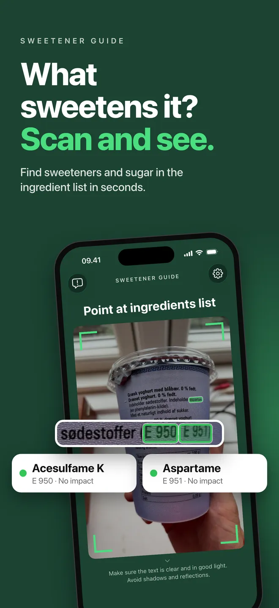
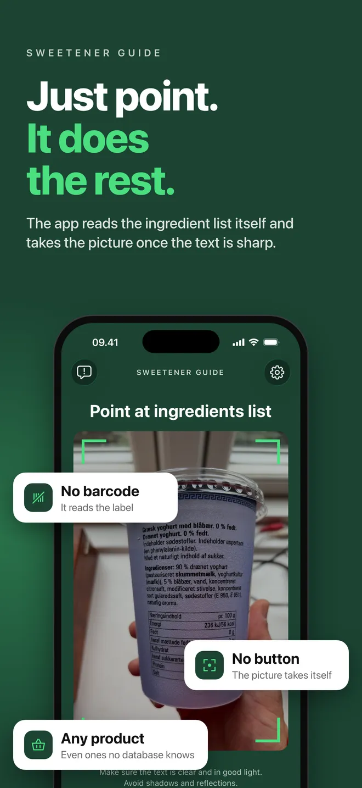
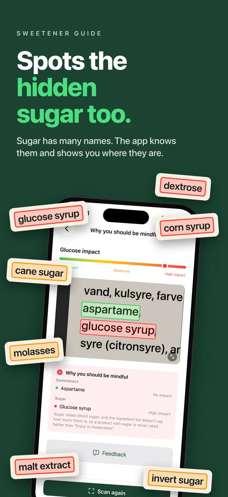
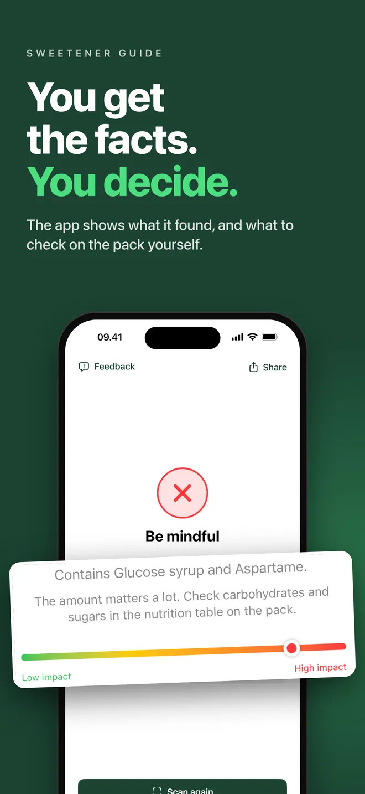
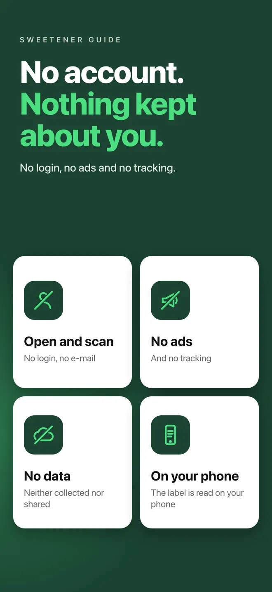
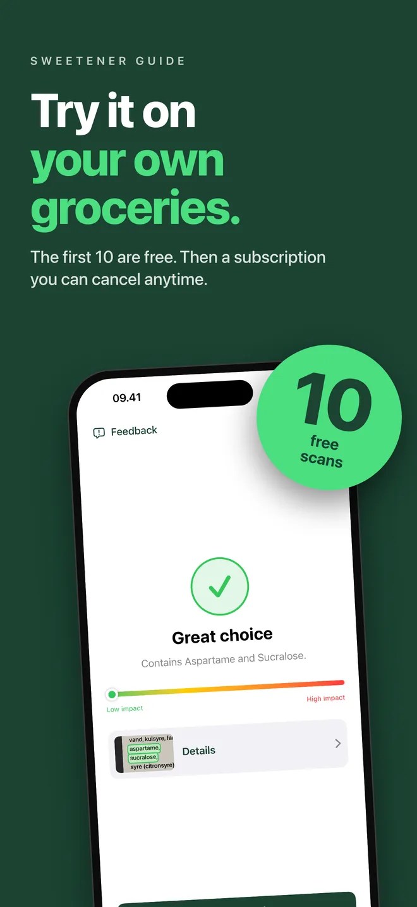

Ten scans free. No account needed. Works without an internet connection.






How it works
A quick check while you shop.
Three steps, about ten seconds, standing in the aisle.
1
Open the scanner
The camera starts right away, so there is no scan button to find.
2
Point at ingredients
Hold the label in good light and keep the text inside the frame.
3
Check the result
The app shows what it found and a simple glucose impact bar, with the
details behind it.
Why you can rely on it
Built to be trusted, not clever.
We never see what you scanned
The photo stays on your phone and your phone reads the text
itself. There is no server for it to be sent to — the app only
ever downloads the list. The photo leaves your phone only if you
email it to us as feedback yourself.
Written by people who live with it
The list is put together by Danes with type 2 diabetes. The app
always shows why an ingredient got its rating, so you can weigh
up the reasoning yourself.
Works with no signal
The whole list is built into the app. It works from the very
first launch — at the back of a shop, in a basement freezer
aisle, or on holiday.
The only figures we ever see are the aggregated download and usage
counts that Apple and Google publish to every app in their stores.
Nothing in them relates to what you scanned.
Download
Install on your phone.
The Sweetener Guide comes to iPhone first, with Android to follow.
Install it, allow camera access, and you are ready to shop.